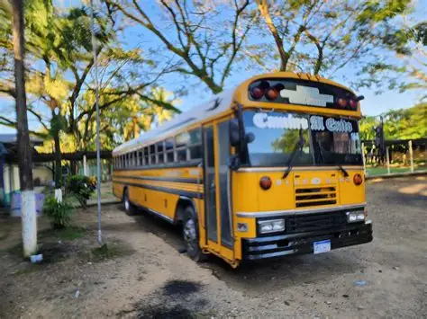

Presentación
El Instituto Gubernamental Santiago Riera Vásquez es una institución
educativa comprometida con la formación académica, ética y profesional
de los jóvenes, brindando oportunidades de aprendizaje de calidad para
contribuir al desarrollo de la comunidad y del país.
Misión
Formar estudiantes con valores, conocimientos y competencias que les
permitan desarrollarse de manera integral y enfrentar los desafíos de la
sociedad actual.
Visión
Ser una institución reconocida por su excelencia educativa, formando
ciudadanos responsables, innovadores y comprometidos con el progreso de Honduras.
Carreras
- Bachillerato en Ciencias y Humanidades
- Bachillerato Técnico Profesional en Informática
- Bachillerato Técnico Profesional en Administración de Empresas
- Bachillerato técnico profesional en Contabidurías y Finanzas
- Bachillerato Técnico Profesional en Electricidads
Transporte
También contamos con transporte especial para nuestros alumnos que los trae al instituto y
los regresa al punto en donde ellos fueron recogidos, así tienen un regreso a casa más seguro.

Dirección
Omoa, Cortés, Honduras, Colonia Las Flores.
Ver Historia del Instituto